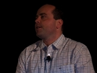
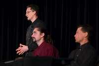

One week after the release of NetBeans IDE 6.1, an enthusiastic crowd met to celebrate the fifth NetBeans Day in San Francisco, and the second NetBeans Day to be held at CommunityOne in the Moscone Center.
Director of evangelism Judith Lilienfeld welcomed the attendees with good news: In only four years, the number of active users has increased steadily to 485,000. In 2008, NetBeans IDE has already won several Jolt and Developer.com awards. In NetBeans IDE 6.1, startup speed increased significantly, and a row of new and improved plug-ins is available, including Intland's CodeBeamer plug-in and JasperSoft's visual report designer for JasperReports.


Tor Norbye talked about the soon-to-be-made-public GSF framework that stands behind the famous NetBeans Ruby IDE. GSF has been used to improve editor support for JavaScript, CSS, HTML, and JavaServer Pages (JSP) technology in NetBeans IDE 6.1, and it will also be used for the upcoming PHP, Groovy, Python, and Scala support.
Norbye stressed the difference between GSF and the already established Schliemann framework: Use Schliemann to quickly implement new basic editor features such as syntax coloring or indentation for a language. When you need deeper support such as code completion or refactoring, you supply the lexer and parser for the language, and then use the upcoming GSF framework to integrate it into the IDE.

As an example, Roman Strobl demo'd the Early Access NetBeans IDE for PHP. In addition to standard editor features such as syntax coloring, refactoring, and code completion, NetBeans IDE allows you to automatically upload PHP pages to the web server directory for a working preview. The IDE's new PHP support was implemented in only two months, thanks to GSF.
The Java Posse recorded a live podcast during the lunch break. Listen in as Tor Norbye (Sun Microsystems), Carl Quinn (Google), Dick Wall (Google), and Joe Nuxoll (formerly with Apple, now with Navigenics) discuss the latest news in Java development.

In the first technical session, "NetBeans — Faster Than Ever," NetBeans experts Arseniy Kuznetsov, Tim Boudreau, Jarda Tulach, and Tomas Pavek gave more details about the performance improvements in NetBeans IDE 6.1. The attendees got a thorough overview of code changes in various areas of the IDE.

After this overview, Roderico Cruz and Girish Balachandar got "Enterprise Ready"! In a series of demos, they showed wizards to create, consume, test, and monitor messages across your web applications and SOAP- and REST-based web services, as well as tools to secure, orchestrate, and integrate services into your application.
Attendees also learned how to expose and consume useful software services such as Google Maps and how to generate database-ready JavaServer Faces applications in only one step. Other demos covered visual designers for authoring XML and WSDL documents, a JAXB wizard for generating Java code from XML schema, and another wizard for generating Entity classes from database schema. NetBeans IDE not only supports the Spring Web framework but also the Hibernate framework: Get the plug-in from the plug-in center.


In the next session, Tor Norbye, Sandip Chitale, Arun Gupta, Geertjan Wielenga, and Deep Bhattacharjee continued with the web application theme. They demonstrated Ajax features and how to make the best of frameworks like jMaki and Wicket. The JavaScript support was greatly improved in NetBeans IDE 6.1 and now covers syntactic as well as semantic highlighting, debugging, code completion and type analysis, refactoring, and quick fix hints.
After the break, NetBeans Dream Team members Fabrizio Giudici and Tom Wheeler showcased examples of desktop applications built on the NetBeans platform. The attendees also got practical advice on how to get started with platform development. If you missed it, several books are available in English and German. In addition, you can find all the platform tutorials on the NetBeans Platform web site.
If you're interested in getting officially certified as a NetBeans Platform developer, Geertjan Wielenga recommends checking the training class schedule.
Finally, James Gosling, who is known as the father of Java technology and a NetBeans fan, addressed the NetBeans community in the closing session. He invited authors and developers to step forward and show their work in a series of quick and cool Lightning Talks.


Afterward, NetBeans Dream Team member Tom Wheeler and NetBeans community manager Bruno Souza announced the winners of the NetBeans Innovators Grant — 20 new open-source projects that Sun will support this year.
Every NetBeans Day attendee received a NetBeans bag with cool stuff including a NetBeans cap. And after the last session, all the NetBeans fans were invited to pick up their free copy of the new book NetBeans Tips and Tricks and a NetBeans USB memory stick preloaded with NetBeans IDE 6.1.